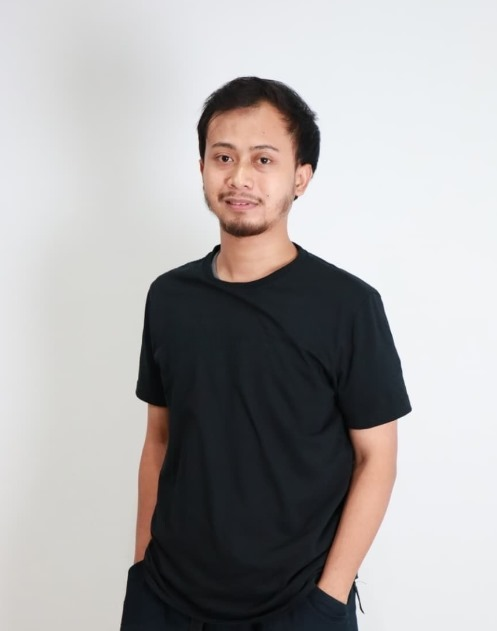

Rahmat Amri Fathoni
Backend Java Developer / Full-Stack Developer

Skills
Professional Experience
Software Engineer (Fokus Backend) - PT Sinarmas Multiartha TBK / Danasaham
Merancang, mengembangkan, dan mengoptimasi RESTful API serta layanan integrasi API eksternal untuk sistem perbankan. Bekerja dengan arsitektur microservices menggunakan Spring Cloud, Eureka, dan Kafka, mengelola MongoDB dan PostgreSQL, caching Redis, security, CI/CD, serta deployment berbasis Docker.
Web Developer Outsourcing - CV DOIT Persada Indonesia
Mengembangkan aplikasi web berbasis PHP CodeIgniter 4 dengan arsitektur HMVC, integrasi database, dan penyesuaian fitur sesuai kebutuhan bisnis klien.
Full-Stack Developer (Pekerja Lepas) - Yayasan Manbatul Ulama
Mengembangkan landing page dan sistem informasi yayasan dari awal, mencakup frontend responsif, backend management data, dashboard admin, pengelolaan konten, dan integrasi database.
Java Developer (Pekerja Lepas Remote) - PT. Obormas Mitra Elektrindo
Mengembangkan integrasi sistem Java dengan perangkat biometric, termasuk fingerprint scanner, passport scanner, dan face recognition untuk komunikasi hardware yang stabil dengan backend system.
Backend Java Developer - PT Harmonix Teknologi Peentar
Membangun dan mengoptimasi RESTful API menggunakan Spring Boot, autentikasi JWT, optimasi database, integrasi Redis/Kafka, CI/CD Jenkins, GitLab, dan containerization Docker.
Fullstack Developer - MAN Sukoharjo, Jawa Tengah
Mengembangkan sistem informasi madrasah, PPDB online, sistem korespondensi digital, serta mengelola hosting, domain, maintenance website sekolah, dan administrasi dokumen digital.
Projects
Danasaham - Platform Investasi Saham
Backend sistem investasi saham perbankan dengan microservices, integrasi E-KYC, ISO 8583 untuk transaksi banking, WebSocket real-time, dan SFTP. Deployment dibuat skalabel menggunakan Docker dan Kubernetes.
Spring Boot, Spring Cloud, Eureka, Redis, MongoDB, Kafka, Jenkins, ISO 8583, E-KYC, WebSocket, SFTP, Docker, Kubernetes.
PT Baron - Sistem Belanja Bahan Dapur
Aplikasi pengadaan bahan dapur untuk membantu tim dapur membuat permintaan bahan, membandingkan penawaran supplier, membuat purchase order, dan memantau pengiriman sampai pesanan selesai.
Laravel 12 API, React Native, TypeScript, React Navigation, Zustand / Redux Toolkit, Axios, React Hook Form, Zod / Yup, AsyncStorage / MMKV, SafeAreaProvider, ESLint, Prettier, Environment Config, Absolute Import Alias, React.js Vite, Tailwind CSS, MySQL, Web Admin.
Wincos Warranty - Mobile App Dealer
Pengembangan aplikasi mobile React Native untuk mendukung proses dealer, transaksi Super Dealer, garansi, dan pembayaran. Fokus kontribusi mencakup perubahan metode pembayaran Instant dan Bank Transfer, integrasi Midtrans Snap, flow cicilan dealer, refresh detail transaksi, responsive design untuk web dan mobile, penyesuaian UI tablet, serta stabilisasi build iOS terkait Firebase.
React Native 0.75, Expo Dev Client, React Navigation, Redux, Axios, Responsive Design, Firebase Messaging, Midtrans Snap Payment, EAS Build, Android, iOS.
Alat Manajemen Facebook Ads
Aplikasi web untuk mengelola kebutuhan Facebook Ads, termasuk proses login, integrasi data, dan otomatisasi berbasis cronjob agar aktivitas digital marketing lebih efisien dan terorganisir.
PHP, CodeIgniter 4, HMVC, MySQL, Cronjob, Otomatisasi, Facebook Ads.
Sistem Informasi Yayasan Manbatul Ulama
Pengembangan full-stack untuk website resmi yayasan: landing page modern, sistem manajemen informasi program, donasi, kegiatan, dashboard admin, dan integrasi database.
React.js, Tailwind CSS, Laravel, MySQL.
Kimia Farma Mobile - Backend Aplikasi Kesehatan
Backend microservices untuk aplikasi mobile Kimia Farma, dengan integrasi real-time Kafka, caching Redis, dan CI/CD otomatis untuk performa tinggi.
Java, Spring Boot, Spring Cloud, Redis, Kafka, Docker, Jenkins, GitLab, Kubernetes.
Tanhana - Platform Media Informasi Berita
Membangun dan merawat website media berita nasional dengan fitur breaking news, artikel terbaru, berita utama, dan cerpen. Tema dan plugin khusus digunakan untuk optimasi konten dan SEO.
WordPress, PHP, MySQL, HTML, CSS, JavaScript.
Sistem Informasi Madrasah (PPDB Online & Korespondensi)
Pengembangan sistem web terintegrasi untuk madrasah: informasi sekolah, penerimaan siswa baru online (PPDB), dan manajemen korespondensi digital.
PHP, CodeIgniter, MySQL, WordPress, HTML, CSS, JavaScript.